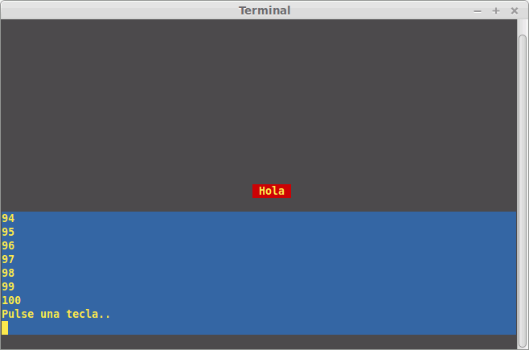

Vamos a ver cómo acceder a la pantalla de texto, al teclado y cómo emitir sonidos simples. Algunas de estas posibilidades las habíamos anticipado ya cuando hablamos de cómo emplear y crear "unidades". Ahora las veremos con algo más de detalle.
Este tema es específico de Turbo Pascal para DOS, aunque algunas de las órdenes que veremos se pueden usar en otras versiones de Turbo Pascal (la 3.0 para CP/M, por ejemplo) y en en otros compiladores que buscan compatibilidad con él, como Free Pascal, Tmt Pascal y Virtual Pascal.
Como ya vimos en el tema 8, nuestro programa deberá incluir la unidad CRT.
Algunos de los procedimientos y funciones más importantes que incluye esta unidad son:
Algunos "extras" no relacionados con la pantalla son:
Un programa de ejemplo que maneje la mayor parte de esto podría ser así:
(* CRT1.PAS, Acceso mejorada a pantalla en modo texto *)
(* Parte de CUPAS5, por Profesor -- Hugo Arcuri -- *)
program Crt1;
uses crt;
var
bucle : byte;
tecla : char;
begin
ClrScr; { Borramos la pantalla }
TextColor( Yellow ); { Escribiremos con color amarillo }
TextBackground( Red ); { y fondo rojo }
GotoXY( 40, 13 ); { Vamos al centro de la pantalla }
Write(' Hola '); { Saludamos con esos colores }
Delay( 1000 ); { Esperamos un segundo }
Window ( 1, 15, 80, 23 ); { Ventana entre las filas 15 y 23 }
TextBackground ( Blue ); { Con fondo azul }
ClrScr; { La borramos para que se vea el fondo }
for bucle := 1 to 100 do
WriteLn( bucle ); { Escribimos del 1 al 100 }
WriteLn( 'Pulse una tecla..');
tecla := ReadKey; { Esperamos que se pulse una tecla }
Window( 1, 1, 80, 25 ); { Restauramos ventana original }
GotoXY( 1, 24 ); { Vamos a la penúltima línea }
Write( 'Ha pulsado ', tecla ); { Decimos qué letra se ha pulsado }
Sound( 220 ); { Emitimos sonido de frecuencia 220 Hz }
Delay( 500 ); { Durante medio segundo }
NoSound; { Y dejamos de emitir sonido }
Delay( 2000 ); { Hacemos pausa de 2 segundos }
TextColor( LightGray ); { Cambiamos a los colores normales del DOS }
TextBackground( Black );
ClrScr; { Y borramos la pantalla }
end.
Que mostraría algo parecido a:
Existe alguna otra orden más avanzada, como InsLine para insertar una línea en pantalla (desplazando hacia abajo las siguientes), DelLine para borrar la línea actual (desplazando hacia arriba las siguientes) y ClrEol para borrar hasta final de línea (usando el color de fondo actual).
Vamos a practicar con algunos ejercicios...
Ejercicio propuesto 11.1.1: Crea un programa que escriba la palabra Hola en pantalla 15 veces, con fondo negro (0) y colores que variarán desde el 1 hasta el 15.
Ejercicio propuesto 11.1.2: Crea un procedimiento "Escribir" que reciba un texto y unas coordenadas X e Y como parámetros. Deberá escribir el texto en esas coordenadas.
Ejercicio propuesto 11.1.3: Crea un procedimiento "EscribirTeletipo" que reciba un texto y unas coordenadas X e Y como parámetros. Deberá escribir el texto en esas coordenadas, letra a letra, haciendo una pausa de 100 milisegundos entre cada letra y la siguiente.
Ejercicio propuesto 11.1.4: Crea un programa que te permita descubrir los códigos asociados a cada letra: esperará hasta que se pulse una tecla y mostrará su código numérico en pantalla. Se repetirá hasta que se pulse ESC (que tiene código 27).
Ejercicio propuesto 11.1.5: Crea un procedimiento "Play" que reproduzca música a partir de su descripción en notación anglosajona (C=Do, D=Re, E=Mi, etc). Todas las notas se reproducirán durante medio segundo. Usa las siguientes frecuencias para cada nota: C=261.63, D=293.66, E=329.63, F=349.23, G=392.00, A=440.00, B=493.88. Un ejemplo de uso sería "Play('CDECDE');"
Ejercicio propuesto 11.1.6: Crea un "juego del ahorcado": Un primer jugador deberá introducir una frase y un límite de intentos (por ejemplo, 8). La pantalla se borrará, y en lugar de cada letra aparecerá un guión. El segundo jugador deberá ir tecleando letras. Si falla, ha gastado uno de sus intentos. Si acierta, la letra acertada deberá aparecer en las posiciones en que se encuentre. El juego acaba cuando se aciertan todas las letras o se acaban los intentos.
Ejercicio propuesto 11.1.7: Crea una versión mejorada del "juego del ahorcado", para un único jugador: El número de intentos estará prefijado en el programa, y existirá una serie de palabras (en un array de strings) de las que el ordenador escoja una al azar (usando "random" y "randomize", como se vio en el apartado 1.6.3).
Ejercicio propuesto 11.1.8: Crea un una función "EntradaMejorada", que reciba una coordenada X, una Y y una longitud máxima. Mostrará una serie de puntos para indicar esa longitud máxima, delimitados por corchetes, así: [.....]. Deberá leer letra a letra (hasta que se pulse Intro), permitir borrar con la tecla de Retroceso, limitar la longitud a la que se ha indicado como parámetro y permitir moverse hacia detrás y hacia delante con las flechas del teclado y con las teclas Inicio y Fin.